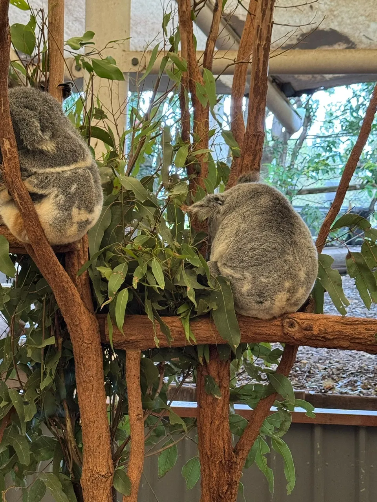
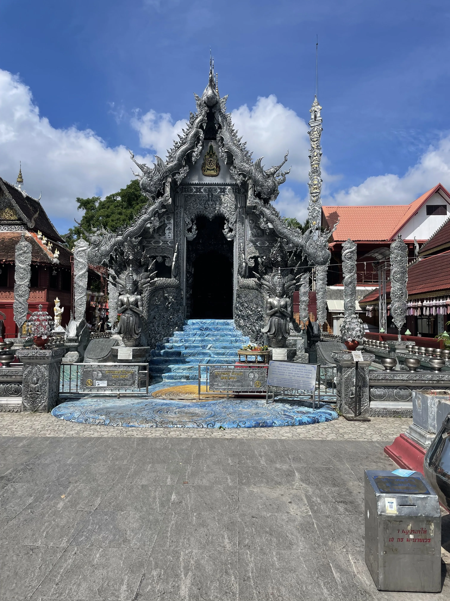

Table of Contents
- Australia Thailand Trip with the Boys
- 🇦🇺 Australia
- 🇹🇠Thailand
- ✈️ Wednesday, August 6 Night — Arrival in Bangkok
- 🌠Thursday, August 7 — Temples
- 🥘 Friday, August 8 — To Krabi
- 🌴 Saturday, August 9 — Phi Phi Islands Excursion
- 💠Sunday, August 10 — Tiger Cave Temple & Railay Beach
- 🚣 Monday, August 11 — Kayaking & Spa Day
- ✈️ Tuesday, August 12 — To Chiang Mai
- 🲠Wednesday, August 13 — Cooking Class
- 💠Thursday, August 14 — Back to Bangkok & Departure
Australia Thailand Trip with the Boys
🇦🇺 Australia
✈️ July 31 — Flight & Arrival
After getting through security, we wandered around a few lounges. Most were unimpressive, but one served a surprisingly good penne arrabbiata. 🍝
We spent too much time hanging out and ended up boarding at last call. It actually worked out since we didn't have to wait in any lines.
While we were sat in aisles, both of us ended up next to very large people. Shivaum got stuck beside a 250+ lb man who snored with a wide-open mouth the entire flight, forcing him to wear AirPods and blast music to fall asleep. I still managed to sleep for about seven of the ten hours.
When we landed in Fiji, we tried to get into a lounge using Priority Pass. They sent us away at first, but eventually let us in. Breakfast ended up being amazing — fried rice with soy and chili oils, crispy hashbrowns, scrambled eggs, coconut jelly, Greek yogurt, and an iced coffee so good I had two.
Gas Fiji Airways Lounge Breakfast, Shivaum and myself at Fiji Airport
At customs, I had to declare my trail mix, but they waved me through. Shivaum had his bag sniffed by dogs, but he was eventually cleared too. ğŸ•
We Ubered to Neil’s apartment, and then went out to a Japanese restaurant for salmon, other fish, edamame, rice, chicken, and gyoza.
After Lunch
We got a coffee on our way back to the apartment and watched some YouTube videos before heading to the pool. Neil swam like a triathlete (because he was training for one). I flailed around and decided I needed to start swimming more. 🏊🏾‍♂️ After the hot tub and a shower, we headed out for dinner.
View from Neil's Brisbane Apartment
We ate at an Italian spot called Vici on Gray Street. Palomas turned out to be a bad choice cus tequila and Italian food don't mix. The chicken parm was dry, so I asked for marinara sauce. At first the waitress misheard me as saying "mayonnaise" and couldn't understand what I wanted. I tried clarifying my request by asking for "tomato sauce", which she seemed to understand. Finally, she brought me ketchup. At least the three-cheese pizza was good. ğŸ•
After dinner we tried going to a famous ice cream shop, but the line was ridiculous. Instead, we picked up a pint of Ben & Jerry’s Half Baked at 7-Eleven. 🍨
Back at the apartment, we planned to watch Transformers, but Shivaum and I passed out immediately. G arrived. 💤
Fast Asleep
🌊 August 1 — Gold Coast
In a show of authentic Australian hospitality, Neil woke me up with some vegemite. 🤢🥴
In the morning, we Ubered about an hour and a half to the Gold Coast. On the way, we stopped at Kefi Café and had chicken shawarma platters with chai. 🍛🫖
Lunch at Kefi Cafe
We walked around Surfers Paradise beach before grabbing Lime bikes. With a Spotify jam session going in our AirPods, biking along the coast felt magical. 🚲🎧
Surfers' Paradise
Biking along the Gold Coast
Our Airbnb was too far to reach by bike, so we Ubered the rest of the way. The place was spacious and luxurious, with a beautiful view and a pool.
Our Gold Coast BnB, at Day & Night
We swam for a while, but a group of boisterous middle-aged Indian men set off the panic alarm in the hot tub, which went off for ages. 🚨
After showering, Neil’s friend Brayden joined us, and we opened wine and acquainted. 🍷
Dinner was at Costa Taco, which was surprisingly solid. I even finessed a free margarita. 🌮🍸
We went clubbing afterward, and it turned out to be one of the best clubs I’d ever been to. The DJ played house and dance-y remixes of popular songs, and transitioned beautifully. It did feel a tad like an influencer central, but the music was god-tier and people were friendly.
At the club on the Gold Coast
After a couple drinks and some dancing, we made it back to the Airbnb before midnight and knocked out.
🌅 August 2 — Back to Brisbane
We woke up to an incredible ocean view. Neil had already gone on a run, but we walked the beach together upon his return. 🌊
For breakfast we had GYG (Guzman y Gomez) burritos 🌯. We followed it with coffee and pastries from a café. ☕️🥐
Morning Beach Walk along Gold Coast
After packing up, we took a public train back to Brisbane.
While waiting for Varun and Akhil, whose flight was delayed, Neil, Shiv, and I went for a 5k run. I struggled during it, but felt good afterward. 🏃🏾
Once Varun and Akhil arrived, we all went for lunch at a Mediterranean restaurant. The food and vibes were great.
Mediterranean Lunch Spot
Later, we moved into a new Airbnb near Neil’s hotel. It was comfortable, with a nice view. However, to our disappointment, the Wi-Fi was on PTO for the duration of our stay. ❌🛜
View from BnB
We tested out the pool which felt like a cold plunge, and the hot tub which, unfortunately, didn’t heat well. I kept switching between the two.🔥🧊
That evening, we pregamed while playing Annihilation. The drinks loosened our tongues and set our heads afloat. 🏮
Annihilated
Dinner was at another Italian restaurant with excellent pasta and wine. 🍝🍷
Afterward, we went to a bar where I made up a card game to decide who bought the next round. Akhil lost and had to pay.
We went clubbing afterward. Maya, a rooftop bar, was fun, but Tax Office was disappointing after a long line and a $20 cover for Neil and Akhil. We eventually went back to Maya.
Varun and Gaurav left early, but the rest of us stayed out until around 2–3 AM.
🌿 August 3 — Koalas, Kangaroos & Ramen
We woke up naturally and walked 30 minutes to the Botanical Garden. On the way, we stopped at a food market, where I got a pain au raisin and a lemongrass chicken banh mi.
We ate sitting on the grass in the garden and then found a café nearby. I had an iced mocha, which wasn’t very sweet but still good.
We headed home briefly so everyone could take bathroom breaks, and then Ubered to the Koala Sanctuary.
The sanctuary started with a sheepdog herding show, then we saw wombats, koalas, cassowaries, crocodiles, snakes, lizards, and even a platypus.
The highlight was the kangaroo field. We petted kangaroos and emus, and saw a pregnant kangaroo with a joey’s leg sticking out.

Some pics from the sanctuary
Before leaving, I bought some souvenirs, and Neil introduced me to Golden Gaytime ice cream, which was so gas I went back and bought one for myself.
On the Uber ride back, the driver had a big personality, joking about his AI assistant “Patricia.”
We stopped at an outdoor mall for food: I had a sushi roll and chicken tenders at Betty’s Burgers, while others grabbed burgers. After, we all hit Krispy Kreme.
Back at Neil’s, we swam again, played chickenfight in the pool, and sat in the Jacuzzi and sauna. Varun and Shivaum were quite the formiddable chickenfight duo.
Dinner was at a ramen shop. I wasn't a huge fan of my miso ramen but the appetizers were nice. 🍜
Back at the apartment, we played Codenames, which ended evenly. I wound down watching weaving videos before falling asleep.
🏖️ August 4 — Noosa + Neil’s Birthday
Varun and Gaurav picked up the car while the rest of us packed for a beach day.
Our first stop was McDonald’s for breakfast: hashbrowns, a chicken McMuffin, apple slices, apple pie, and an iced vanilla latte for myself.
We drove to Noosa National Park, which turned out to be perfect. The water was warm, the sand was soft, and we body-surfed and lounged for hours.
At the beach in Sunshine Coast
In downtown Noosa, we had sushi rolls and açai bowls. The vendor was nice enough to throw in a Biscoff cookie.
We lost track of Varun and Akhil for a while, but eventually regrouped at the car.
From there, we drove to the Sunshine Coast to catch the sunset, which was beautiful.
During the drive, we played road trip games like What Passes Through the Gate, Lateral Thinking Scenarios, Contact, Wavelengths, and made up stories.
Dinner was Japanese BBQ, which was really good, though it was a long drive to get there.
After a quick stop at Neil’s, we went back to the Airbnb and celebrated Neil’s birthday with a sour cream cake that was meant as a meme but actually tasted pretty good.
Neil tries his bday cake
We spent the rest of the night chilling. I played Cambio with Varun while the others debated soccer rankings.
🲠August 5 — Last Day in the Land of the Roo
In the morning, I joined Shiv at L’Americano café, where I had an iced mocha and a biscuit.
Cafe L'Americano
Later, Shiv, Varun, Akhil, and I grabbed Lime bikes and scooters to ride along the river.
Ride to Sarni Sandwiches
We stopped at Sarni café for sandwiches and hard lemonade. The sandwiches were horrible, but the ride itself was fun.
We Ubered to Neil’s and walked over to the Queensland Museum, hoping to see Aboriginal history. Instead, we found a huge exhibit on Ancient Egypt, which felt completely out of place.
Out in Brisbane
After busing back to the Airbnb for a rest, we returned to Neil’s and then took a one-hour ferry ride. The views of the city along the river were great.
View of Brisbane from river ferry
Dinner was at Same Same, a Thai spot where we had the chef’s tasting menu for 86 AUD each. The espresso martini was amazing, the rum cocktail less so, but the food was excellent.
Dinner at SameSame
After dinner, we went to the casino. Several of us put $100 on black, and it hit 🤑, which paid for part of dinner (RIP Sai 🪦). We played a little blackjack and left while we were ahead.
Back at Neil’s, Sai introduced us to a card game called Literature, which turned out to be a lot of fun. After an hour of that, we returned to the Airbnb and crashed.
Playing Literature at Neil's apartment
✈️ Wednesday, August 6 Morning — Leaving Brisbane
In the morning, we had breakfast at Bare Beanz café. I had pancakes, a potato-cheese waffle, and a vanilla latte before Varun, G, Sai, and I headed to the airport.
See ya boys 🥲
🇹🇠Thailand
✈️ Wednesday, August 6 Night — Arrival in Bangkok
The day was mostly taken up by the flight. After landing, I bought an eSIM and we made our way to the hostel.
We stayed in capsule beds, then headed out to walk around.
We ate at G’s German and Thai food, where we ordered Panang curry, Pad Thai, Pad See Ew, green curry, and papaya salad. The food was pretty good.
Afterward, we walked through the market area, where there were many ping-pong shows being advertised. None of them were able to reel us in though.
We stopped at a convenience store to pick up a few things, then went back to the hostel and fell asleep.
My capsule bed
🌠Thursday, August 7 — Temples
We took a shower and walked to La Cabra for breakfast. We tried several pastries: spinach and egg, an egg tart, a cinnamon roll, a German pineapple pastry, and an egg-and-cheese or mushroom Danish that was especially good. I had an iced latte, which was just okay. 🥮
We walked to exchange money and picked up some cash, and then went back to the hostel for jackets because of the heavy rain. Twas monsoon season, so when it rained it poured.
We grabbed a scooter ride and then took a boat to the Grand Palace. Bought some traditional pants outside because they wouldn't let us in wearing shorts. Walked through the palace, which was beautiful but hot, humid, and packed with tourists. We all sat down to pray for a bit. 🙏🏾
The boat ride and some temple pics
Stopped at a café nearby. I had a honey lime soda, which was refreshing.
Then we visited Wat Pho, followed by lunch at a Thai place before taking a ferry across to Wat Arun. The temple was stunning and full of Buddhist symbolism, including depictions of heaven and hell.
More temple pics
After crossing back and taking motorbikes to the hostel, we rested for a bit.
Dinner was at The Laughing Tiger. The fusion food was mediocre; I had green curry, others had burgers, tikka masala, and more. My cocktail was awful, though their espresso martinis were better.
We were all gassed, so we walked around briefly, took motorbikes back, and crashed.
🥘 Friday, August 8 — To Krabi
In the morning, we packed up, showered, and walked through Lumphini Park to arrive at Allo House cafe, a hidden gem with a garden.
Lumphini Park
There, we ordered chicken cappellini, pancakes, eggs, and a soft omelet that was excellent. We also had coffee floats with pistachio and Thai tea ice cream, and I ordered a Thai iced coffee, which was very good. We shared some fried chicken that was juicy and tender.
Allo House Cafe and the ride back to hostel
We headed to Bangkok airport, hung in the lounge, played Literature, ate, and had espresso martinis (really good). ☕️🍸
Enjoying espresso martinis and cards at a lounge in BKK airport
After landing in Krabi, we took a Grab taxi to our villa, which was absoutely beautiful. It was basically a courtyard with a large swimming pool in the middle, surrounded by each bedroom and the kitchen.
Our villa in Krabi
We went to Ao Nang Beach for a swim, where I almost got bitten by a crab. We walked around the beach area and then stopped at a bar to play pool and beer pong.
Ao Nang Beach
After returning home to rest a bit, we walked to Ali Baba for Indian food. Dinner was solid.
Dinner at Ali Baba
We ended the night playing cards at the villa before falling asleep.
🌴 Saturday, August 9 — Phi Phi Islands Excursion
We woke up early and got picked up by bus for a full-day excursion to the Phi Phi Islands. The bus was packed like a cargo van.
After a briefing, coffee, and a snack, we boarded the boat. The weather was rough, so we couldn’t visit Maya Bay. It was stormy, and my makeshift hat kept flying off.
Our first stop was at a lagoon, where we had an incredible swim in calm, beautiful water.
The Lagoon
We attempted snorkeling at another location, but the waves were too strong and visibility was poor.
By the time we reached the island for lunch, I was nauseous, so I barely ate, but what I had was good.
We walked around the island briefly before heading back. On the return trip, the water had calmed, and the snorkeling was much better.
The water we snorkeled in and a snippet of the boat ride
We also stopped at a beach for a quick swim, where I took a nap.
After returning to the villa for a quick rest, we went to get proper Thai massages at Momiji Onsen. Mine was intense and she cracked my back like bubble wrap. 💆🏾
For dinner, we went to an Indian restaurant recommended by Neil. The food was excellent, though we ordered far too much. The mango lassi stood out as especially good.

Sai demolishing his plate
After dinner, we played cards at the villa and went to bed.
💠Sunday, August 10 — Tiger Cave Temple & Railay Beach
We woke up at a reasonable time, had breakfast, then headed out to Tiger Cave Temple. The climb was 1,200 steps and left us gassed, but the views were worth it.
The bike ride there and the climb
The summit views on both sides
Some selfies
One final summit pic 😊
Pagoda at the bottom of the steps
We explored nearby caves and nature trails, where we saw an animal that looked like a cross between a mongoose, possum, or meerkat. None of us knew what it was.
Caves and the animal
Temple in the woods
Back at the villa, we had Indian leftovers for lunch and rested.
In the afternoon, we took a boat to Railay Beach. While the others swam, I stretched on the beach and accepted an offer for a foot massage and mini pedicure.
Boat to Railay beach
Railay beach
We didn’t stay long before moving to a nearby restaurant for Thai ice teas.
Back at Ao Nang, we showered, then had dinner at Enjoy Thai – huts with really good food. I got a coconut juice and a mix of Thai dishes.
Dinner at the huts
Afterward, we stopped at a store on the road to play pool. We accidentally spilled Coke on the table, and they charged us 200 baht for cleaning. Honestly it could've been much worse.
We returned home, played cards, and went to sleep.
🚣 Monday, August 11 — Kayaking & Spa Day
We started the day with a kayaking excursion that was an hour’s drive away. We paddled through mangroves, the sea, and a river in the rain, which made the scenery feel even more lush and atmospheric.
I shared a boat with Varun while the others paired up. The trip was a highlight of the day.
Kayaking through the mangroves
After lunch at Burger Daddy (pizza + burgers, tasty but greasy), I tried getting a haircut. The barber rushed and even cut my lip while shaving me, which was frustrating.
Later, I looked for a spa, eventually ending up at Radarom Spa for a manicure and pedicure that lasted ~1.5 hours.
After relaxing at the villa, I joined Varun and Akhil for an evening out. We tried to see a fire show at Ao Nang Beach, but it wasn’t happening. Instead, we shopped a bit, bought passport covers, and then went for massages.
By the time we finished it was 10 PM and most places were closed. We ended up back at Burger Daddy, grabbed a couple pizzas, and ate them at the villa before packing and sleeping.
✈️ Tuesday, August 12 — To Chiang Mai
We caught an early morning flight to Chiang Mai, which was mostly empty.
From the airport, we went straight to a Michelin-starred restaurant that had kept its star for seven years. The khao soi was good, but the other curries were disappointing. I personally don't know how that restaurant consistently kept the star.
The so-called Michelin star restaurant
We crossed the street to a café for coconut lattes. When we tried to play cards, the staff stopped us, explaining that card games are considered gambling in Thailand.
Our Airbnb was very nice, with two adjoining houses. We relaxed, played Literature, and then headed out.
Chiang Mai AirBnB
At the park, we rented bicycles and rode around gardens and temples. The Grand Palace was especially beautiful.

Flower pics
Varun and Akhil returned home, while Gaurav and I visited another temple with a stunning panoramic view of Chiang Mai.
Pics at nearby temple
Panoramic view of Chiang Mai
Afterward, I went solo to Fern Forest Café where I got a coconut cream pie and Thai tea, then wandered around the Tha Phae Gate and market.
Fern Forest Cafe & Tha Phae Gate
I met the boys later at a rooftop bar. We had beers, dinner, and soju, then took a taxi to the Chiang Mai Stadium for Muay Thai fights. Varun and Akhil bet on a fight and won.
Rooftop Bar and Drinks
Fight Night
We stopped at a 7-Eleven on the way home and ended the night there.
🲠Wednesday, August 13 — Cooking Class
In the morning, Gaurav and I visited the Silver Temple. We spoke with a monk about forgiveness, acceptance, and religion, and he gave me a blessing that required me to throw away my socks. I bought new ones at 7-Eleven afterward.

Silver Temple
We biked to a café for lunch, where we met Varun and Akhil.
Gas lunch at Gord cafe
We tried to shop at Jing Jai Market, but since it was a weekday, no stalls were open, so we looked at nearby shops instead.
In the evening, we went to a market to meet our instructor for the cooking class. After a short tour of the food stalls, we went to the cooking school, which was pleasantly set in the middle of a large expanse of fields.
Cooking Class! 🧑🏾‍🍳
We learned to make spring rolls, Pad Thai, coconut chicken soup, panang curry, and mango sticky rice. Everything turned out great.
After the class, we returned home and went to sleep.
💠Thursday, August 14 — Back to Bangkok & Departure
I flew back to Bangkok in the morning and after a quick brunch, went straight to the Jewelry Trade Center.
Last brunch in Thailand
I spent most of the day browsing stones. One seller quoted suspiciously low prices for "real" rubies, so I passed. Eventually, I bought a jade earring and necklace set for Zahra, a pendant for Kavya, and a few loose stones.
By the time I finished shopping, it was late. I quickly exchanged money and tried to pick up souvenirs but ran out of time.
The ride to the airport was long, and even there I could not find anything worth buying.
I had a quick dinner in the lounge and then boarded my flight. The flight was comfortable, and after a connection, I finally arrived home. 🏡
The End – Thanks for Reading â¤ï¸ğŸ‡¦ğŸ‡ºğŸ‡¹ğŸ‡